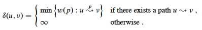

Outline
Today’s Theme: Relax!
- Shortest Paths Problems
- Bellman-Ford Algorithm
- Shortest Paths in a DAG
- Dijkstra’s Algorithm
Shortest Paths Problems
or how to get there from here …
Definition
Input is a directed graph G = (V, E) and a weight function w: E -> ℜ.
Define the **path weight w(p) ** of path p = ⟨v_0, _v_1, … _vk⟩ to be the sum of edge weights on the path:

Then the shortest path weight from u to v is:

A shortest path from u to v is any path such that w(p) = δ(u, v).
Examples
In our examples the shortest paths will always start from s, the source. The δ values will appear inside the vertices, and shaded edges show the shortest paths.

As can be seen, shortest paths are not unique.
Variations
- Single-Source: from s to every v ∈ V (the version we consider)
- Single-Destination: from every v ∈ V to some d. (Solve by reversing the links and solving single source.)
- Single-Pair: from some u to some v. Every known algorithm takes just as long as solving Single-Source. (Why might that be the case?)
- All-Pairs: for every pair u, v ∈ V. Next lecture.
Negative Weight Edges
These are OK as long as no negative-weight cycles are reachable from the source s. Fill in the blanks:

If a negative-weight cycle is accessible, it can be iterated to make w(s, v) arbitarily small for all v on the cycle:

Some algorithms can detect negative-weight cycles and others cannot, but when they are present shortest paths are not well defined.
Cycles
Shortest paths cannot contain cycles.
- We already ruled out negative-weight cycles.
- If there is a positive-weight cycle we can get a shorter path by omitting the cycle, so it can’t be a shortest path with the cycle.
- If there is a zero-weight cycle, it does not affect the cost to omit them, so we will assume that solutions won’t use them.
Optimal Substructure
The shortest paths problem exhibits optimal substructure, suggesting that greedy algorithms and dynamic programming may apply. Turns out we will see examples of both (Dijkstra’s algorithm in this chapter, and Floyd-Warshall in the next chapter, respectively).

Lemma: Any subpath of a shortest path is a shortest path.
Proof is by cut and paste. Let path puv be a shortest path from u to v, and that it includes subpath pxy (this represents subproblems):

Then δ(u, v) = w(p) = w(pux) + w(pxy) + w(pyv).
Now, for proof by contradiction, suppose that substructure is not optimal, meaning that for some choice of these paths there exists a shorter path p’xy from x to y that is shorter than pxy. Then w(p’xy) < w(pxy).
From this, we can construct p’:

Then
which contradicts the assumption that puv is a shortest path.
Algorithms
All the algorithms we consider will have the following in common.
Output
For each vertex v ∈ V, we maintain these attributes:
v.d is called the shortest path estimate.
- Initially, v.d = ∞
- v.d may be reduced as the algorithm progresses, but v.d ≥ δ(s, v) is always true.
- We want to show that at the conclusion of our algorithms, v.d = δ(s, v).
**v._π** = the predecessor of _v by which it was reached on the shortest path known so far.
- If there is no predecessor, _v._π = NIL.
- We want to show that at the conclusion of our algorithms, v._π = the predecessor of _v on the shortest path from s.
- If that is true, π induces a shortest path tree on G. (See text for proofs of properties of π.)
Initialization
All the shortest-paths algorithms start with this:

Relaxation
They all apply the relaxation procedure, which essentially asks: can we improve the current shortest-path estimate for v by going through u and taking (u, v)?


The algorithms differ in the order in which they relax each edge and how many times they do that.
Shortest Paths Properties
All but the first of these properties assume that INIT-SINGLE-SOURCE has
been called once, and then RELAX is called zero or more times.
Proofs are available in the text. Try to explain informally why these are correct.
Bellman-Ford Algorithm
Essentially a brute force strategy: relax systematically enough times that you can be sure you are done.
The algorithm can also be considered a dynamic programming algorithm for reasons discussed below.
- Allows negative-weight edges
- Computes v.d and v.π for all v ∈ V.
- Returns True (and a solution embedded in the graph) if no negative-weight cycles are reachable from s, and False otherwise.

The first for loops do the work of relaxation. How does the last for loop
help – how does it work?
Analysis:
RELAX is O(1), and the nested for loops relax all edges |V| - 1 times,
so BELLMAN-FORD is Θ(V E).
Examples:
Example from the text, relaxed in order (t,x), (t,y), (t,z), (x,t), (y,x) (y,z), (z,x), (z,s), (s,t), (s,y):

Try this other example (click for answer):
Correctness
The values for v.d and v.π are guaranteed to converge on shortest paths after |V| - 1 passes, assuming no negative-weight cycles.
This can be proven with the path-relaxation property, which states that if we relax the edges of a shortest path ⟨v_0, _v_1, … _vk⟩ in order, even if interleaved with other edges, then vk.d = δ(s,vk) after vk is relaxed.
Since the list of edges is relaxed as many times as the longest possible shortest path (|V|- 1), it must converge by this property.
- First iteration relaxes (_v_0, _v_1)
- Second iteration relaxes (_v_1, _v_2)
- …
- k_th iteration relaxes (_v__k-1, v__k)
This is why the Bellman Ford algorithm can be considered to be a dynamic programming algorithm:
- After the first pass, paths of length 1 are correct and are used to construct longer paths;
- after the second pass, paths of length 2 are correct and are used to construct longer paths; etc.
up until n−1, which is the longest possible path.
We also must show that the True/False values are correct. Informally, we can see that if v.d is still getting smaller after it should have converged (see above), then there must be a negative weight cycle that continues to decrement the path.
The full proof of correctness may be found in the text.
The values computed on each pass and how quickly it converges depends on order of relaxation: it may converge earlier.
How can we use this fact to speed the algorithm up a bit?

Shortest Paths in a DAG
Life is easy when you are a DAG …
There are no cycles in a Directed Acyclic Graph. Thus, negative weights are not a problem. Also, vertices must occur on shortest paths in an order consistent with a topological sort.
We can do something like Bellman-Ford, but don’t need to do it as many times, and don’t need to check for negative weight cycles:
Analysis:
Given that topological sort is Θ(V + E), what’s the complexity of DAG-
SHORTEST-PATHS? This one’s on you: what’s the run-time complexity? Use
aggregate analysis …
Correctness:
Because we process vertices in topologically sorted order, edges of any path must be relaxed in order of appearance in the path.
Therefore edges on any shortest path are relaxed in order.
Therefore, by the path-relaxation property, the algorithm terminates with correct values.
Examples
From the text:

Notice we could not reach r!
Let’s try another example (click for answer):

Dijkstra’s Algorithm
The algorithm is essentially a weighted version of breadth-first search: BFS uses a FIFO queue; while this version of Dijkstra’s algorithm uses a priority queue.
It also has similarities to Prim’s algorithm, being greedy, and with similar iteration.
Assumes there are no negative-weight edges.
Algorithm
- S = set of vertices whose final shortest-path weights are determined.
- Q = V - S is the priority queue.
- Priority queue keys are shortest path estimates v.d.
Here it is, with Prim on the right for comparison:

Dijkstra’s algorithm is greedy in choosing the closest vertex in V - S to add to S each iteration. The difference is that
-
For Prim “close” means the cost to take one step to include the next cheapest vertex:
` if w(u,v) < v.key` -
for Dijkstra “close” means the cost from the source vertex s to v: this is in the RELAX code
if _v_._d_ > _u_._d_ \+ _w_(_u_,_v_).
Examples
From the text (black vertices are set S; white vertices are on Q; shaded vertex is the min valued one chosen next iteration):

Let’s try another example (click for answer):

Here’s a graph with a negative weight: try it from s and see what happens:

Correctness
The proof is based on the following loop invariant at the start of the while
loop:
v.d = δ(s, v) for all v ∈ S.
Initialization: Initially S = ∅, so trivially true.
Maintenance: We just sketch this part (see text). Need to show that u.d = δ(s, u) when u is added to S in each iteration. The upper bound property says it will stay the same thereafter.
Suppose (for proof by contradiction) that ∃ u such that u.d ≠ δ(s, u) when added to S. Without loss of generality, let u be the first such vertex added to S.
- u ≠ s, since s.d = δ(s, s) = 0. Therefore s ∈ S ≠ ∅.
- So there is a path from s to u. This means there must be a shortest path p from s to u.
- The proof decomposes p into a path s to x, (x, y), and a path from y to u. (Some but not all of these can be null.)
- y.d = δ(s, y) when u added to S. (By hypothesis, x.d = δ(s, x) when x was added. Relaxation of (x, y) extends this to y by the convergence property.)
- Since y appears before u on a shortest path with non-negative weights, δ(s,y) ≤ δ(s,u), and we can show that y.d ≤ u.d by the triangle inequality and upper-bound properties.
- But u being chosen first from Q means u.d ≤ y.d; so must be that u.d = y.d.
- Therefore y.d = δ(s, y) = δ(s, u) = u.d.
- This contradicts the assumption that u.d ≠ δ(s, u)
Termination: At the end, Q is empty, so S = V, so v.d = δ(s, v) for all v ∈ V
Analysis
The run time depends on the implementation of the priority queue.
If binary min-heaps are used:
- The
EXTRACT-MINin line 5 and the implicitDECREASE-KEYoperation that results from relaxation in line 8 are each O(lg V). -
The whileloop overV elements of Q invokes V O(log V) EXTRACT-MINoperations. - Switching to aggregate analysis for the
forloop in lines 7-8, there is a call toRELAXfor each of O(E) edges, and each call may result in an O(log V)DECREASE-KEY. - The total is O((V + E) lg V).
- If the graph is connected, there are at least as many edges as vertices, and this can be simplified to O(E lg V), which is faster than
BELLMAN-FORD’s O(E V).
With Fibonacci heaps (which were developed specifically to speed up this algorithm), O(V lg V + E) is possible. (Do not use this result unless you are specifically using Fibonacci heaps!)
Dan Suthers Last modified: Mon Apr 14 03:36:49 HST 2014
Images are from the instructor’s material for Cormen et al. Introduction to
Algorithms, Third Edition.